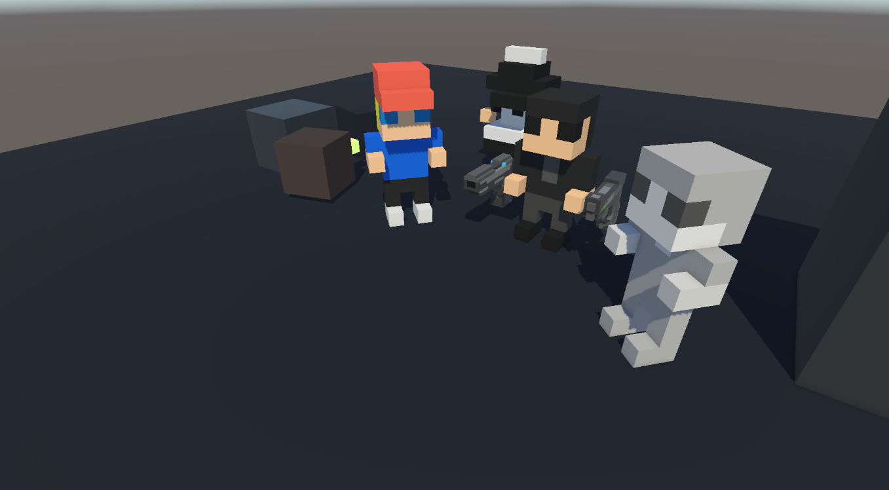
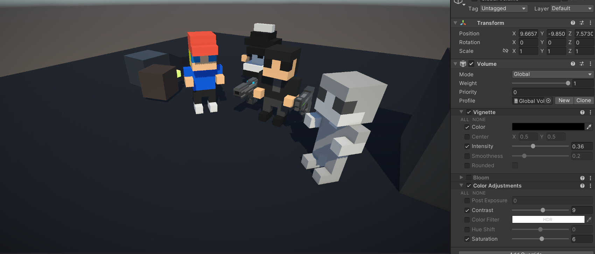

开发者日志00
时间：2024年2月-2024年3月
兴趣使然的项目
Unity Version Control
我们使用了Unity推荐的官方的版本管理系统。Unity自带的版本管理在一定程度上是十分令人迷惑的，Plastic SCM Cloud和Unity Cloud，目前的实际情况是，他们是同一个东西。
还需要注意的是，Unity的中国版本和海外版本自带的版本控制不互通，Unity中国有15GB的免费云端储存，海外版只有5GB，往上需要付费。我们目前使用的Unity海外版，版本管理是免费的5GB。
与此同时，Unity有一个中国特供的团结引擎，似乎提供更多更好的特性，后续值得专门研究一下。
Unity URP Settings
Unity URP渲染管线文档：Universal Render Pipeline Asset
目前的Unity项目后处理效果对比：


Unity Collider & RigidBody
-
Rigidbody in Unity - Everything You Need to Know
总结：
- RigidBody是赋予GameObject物理属性的Component（继承自Component class，与MonoBehavior相 同）。其背后的物理引擎是Nvidia Physix和Box2D
- 重要：选择Kinematic后，物体就不会参与物理的模拟。
- 选择Interpolate选项可以在一定程度上帮助物体运动更流畅。
- 对于碰撞检测，默认的Discrete选择性能最好，但在物体速度过快时（例如子弹）可能会出现碰撞没有被 检测到的情况。具体使用那种模式，可以参考文档Rigidbody.collisionDetectionMode。对于目前 这个项目来说，尽量使用Discrete模式。
- 利用Constraints来限制物体的移动。
- 同时，涉及到物理模拟的代码在
FixUpdate()中更新，保证一致性。类似的，尽量不要弄混对于Transfrom位置的直接操作和物理操作（例如施加力）。
-
From Beginner to Pro: Mastering Unity's Colliders
总结：
- 没有RigidBody的Collider被分为Static Collider，有的则被分为Dynamic Collider。
- 可以使用Tag和Layer来设置分类碰撞检测，需要更复杂的情况可以使用Physics->Layer Collision Matrix设置。
- 详细文档参考Introduction to collision。
注意事项
- 实现层永不否定设计层，有的时候我过于被作为软件开发的常规思路限制了。游戏需要创意，不能因为技术上不好做就放弃一个可能非常有趣的设计。
- Unity老版本项目打开过程中的注意事项：Unity->Window->Package Manger->Visual Studio, Unity UI, etc。报错可能来自没有安装的Package。
Unity Netcode
需要的package有Netcode for GameObjects和Multiplayer tools。
其中Network Manager以Singleton的形式存在，需要添加到Scene当中。之后选择适合的Transport，对于我们项目是Unity Transport。